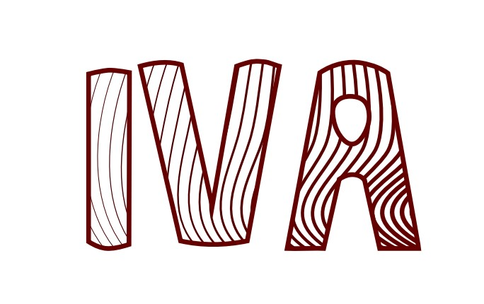
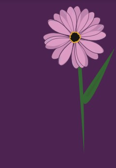
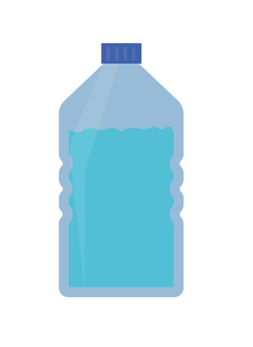
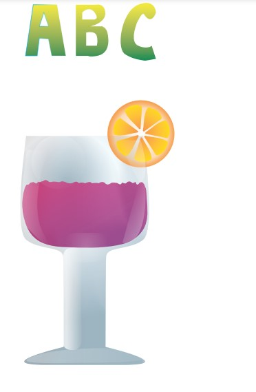
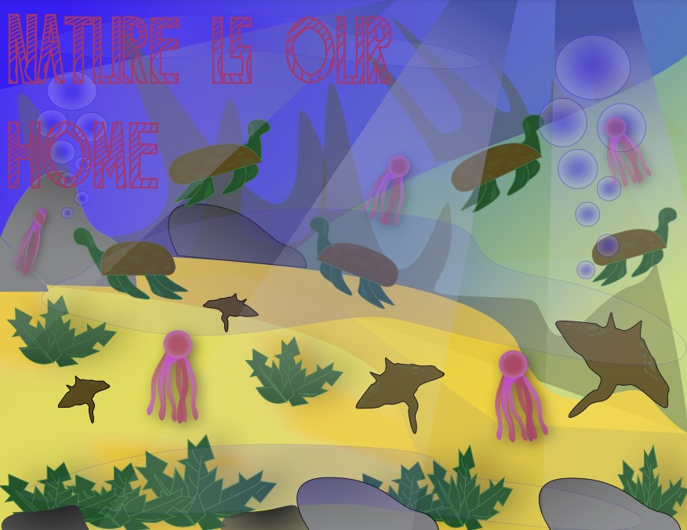
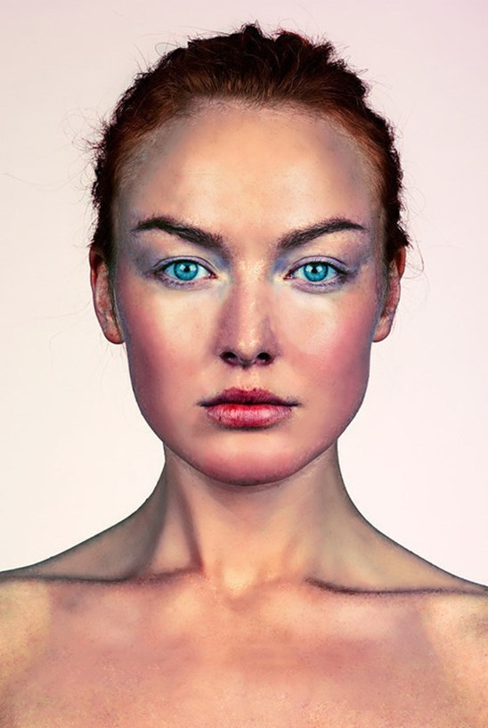
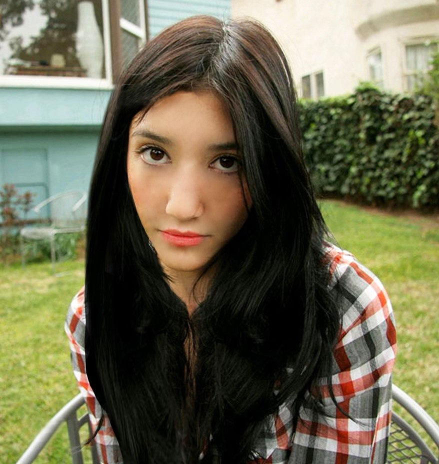
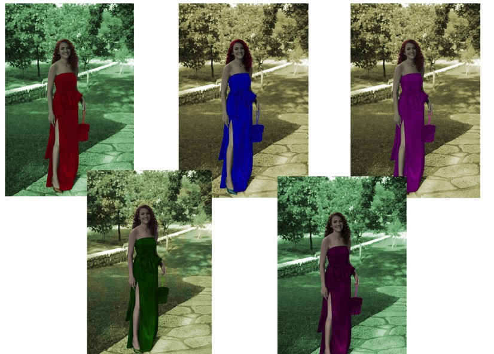
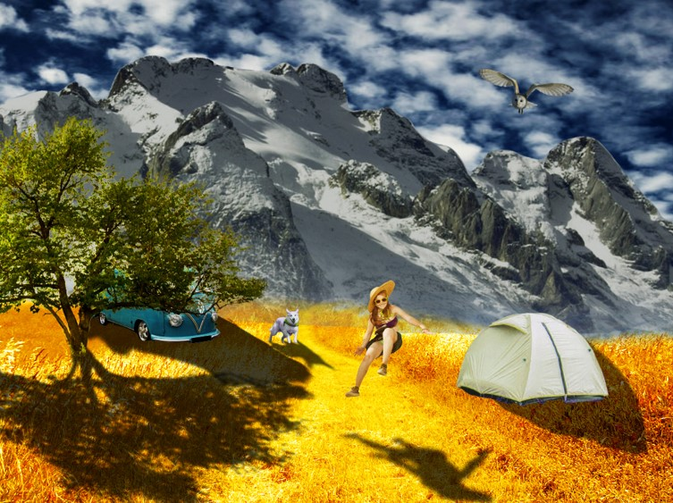
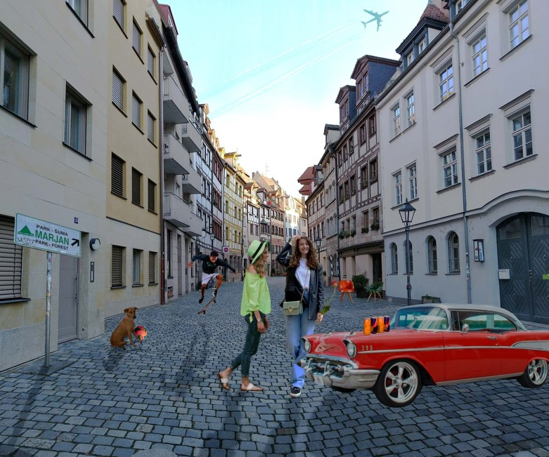

Ovdje ću postaviti svoje vježbe i projekte kroz čitav semestar.
Vježba 1
U prvoj vježbi za zadatak smo imali napraviti naš vlastiti font. Korišten je i na prvoj stranici u naslovu.
Vježba 2
Zadatak za drugu vježbu bio je u Ilustratoru. U ovoj vježbi naučila sam kako funkcioniraju Bezierove krivulje.

Vježba 3
U trećoj vježbi naučila sam koristiti mnoge mogućnosti AI. Neki od njih su sustavi boja, transformacije, multipliciranje i grupiranje.

Vježba 4
Zadatak za četvrtu vježbu bio je također u Ilustratoru. U ovoj vježbi naučila sam koristiti gradijente, transparenciju te mnoge metode spajanja.


PROJEKTNI ZADATAK 1
Nakon četiri vježbe morala sam odraditi Projektni zadatak. Ocjena za ovaj PZ bila je 4.

Vježba 5
Za vježbu 5 imala sam zadatak retuširati i doraditi dvije fotografije.


Vježba 6
Zadatak za šestu vježbu bio je u Photoshopu. U ovoj vježbi naučila sam kako mijenjati boje na određenim dijelovima.

Vježba 7
U sedmoj vježbi zadano nam je napraviti fotomontažu od raznih fotografija te stvaranje realističnog dojma.

PROJEKTNI ZADATAK 2
Za drugi projektni zadatak morali smo retuširati pozadinu, napraviti fotomontažu uz realistične sjene i boje.

Vježba 8
U osmoj vježbi zadano nam je napraviti kinemagraf. Za zadatak smo trebali napraviti vlastiti kinemagraf te kinemagraf prema uputama s videa.
Vježba 9
Za devetu vježbu imali smo zadatak napraviti video na kojem ćemo primijeniti mnoge filtere i efekte.
Vježbe 10. i 11.
Ove dvije vježbe su slične ovom projektnom zadatku. Trebali smo napraviti par html dokumenata.10. i 11. vježba